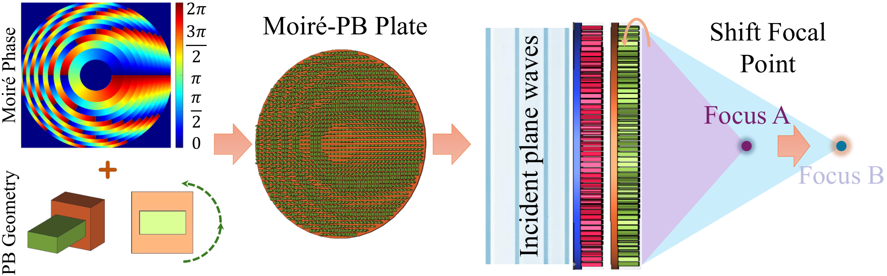
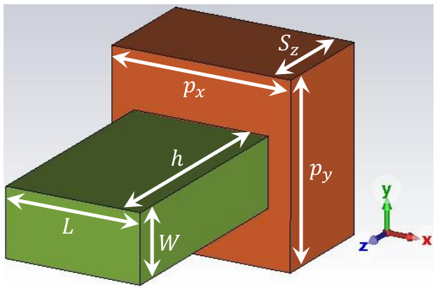
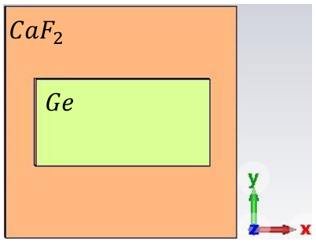
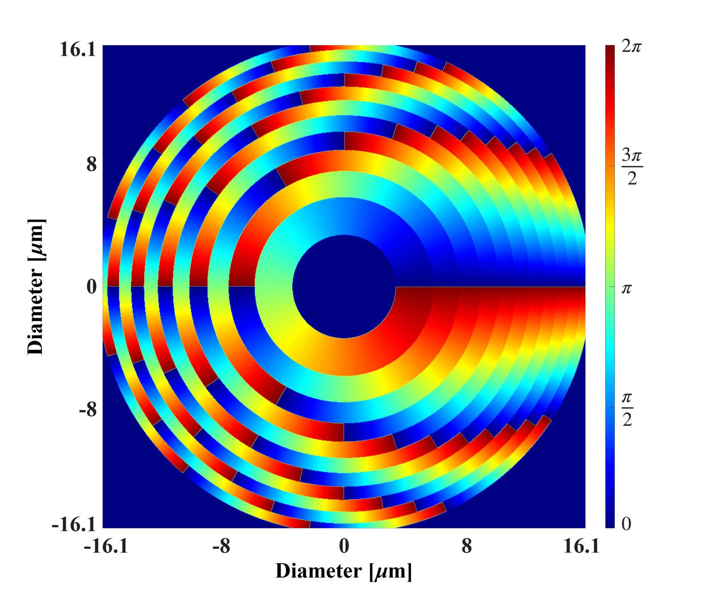
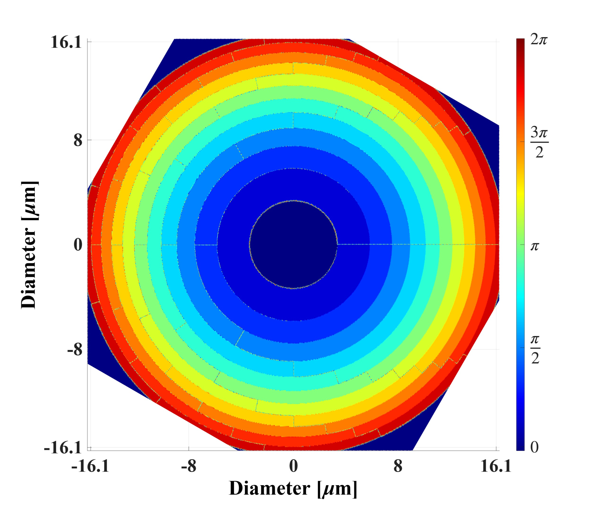
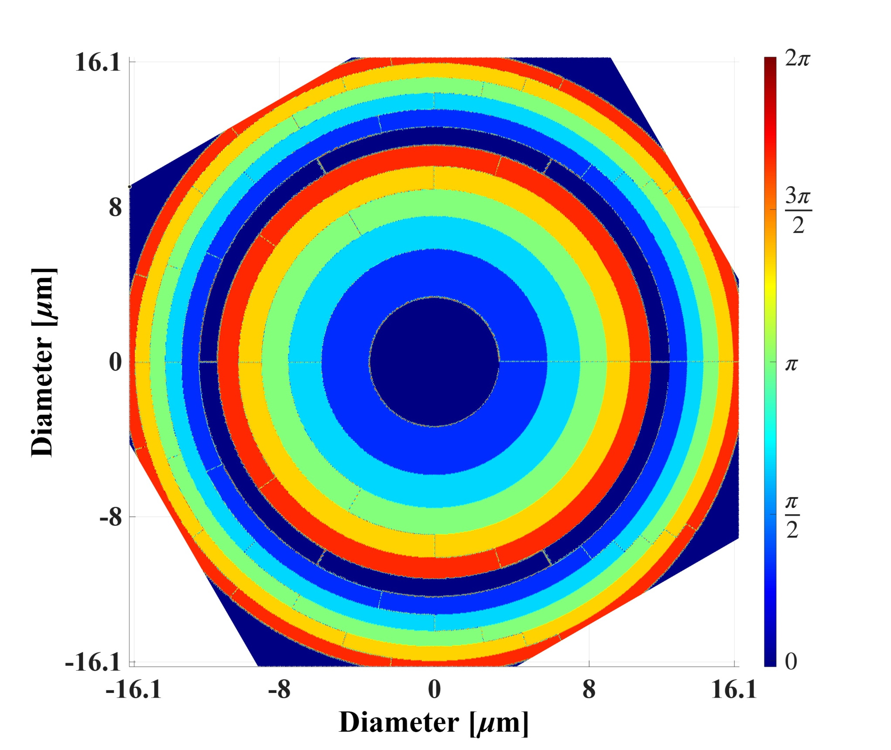
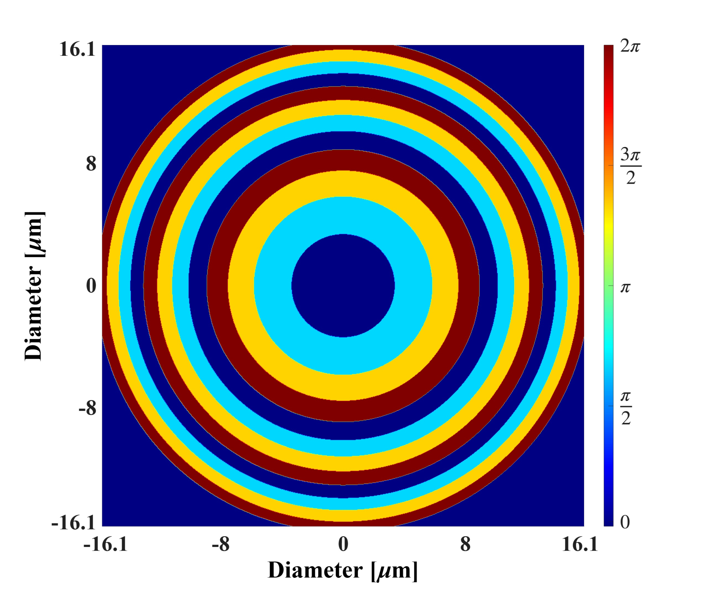
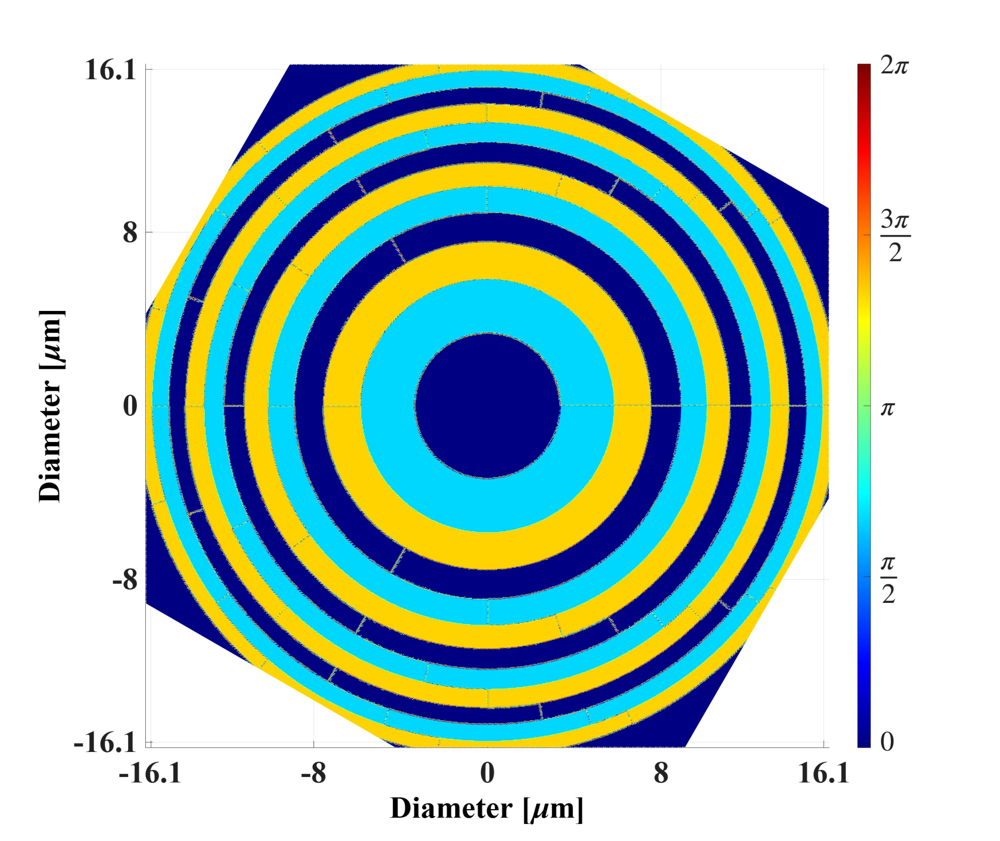

集成莫尔相位与Pancharatnam-Berry相位的连续可调中红外超透镜
摘要
提出一种面向聚焦应用的变焦中红外超透镜，集成Pancharatnam-Berry（PB）相位与基于莫尔图案的机制，以实现旋转波前控制。该超透镜采用两个相同的纳米结构圆盘，在氟化钙（CaF2）衬底上设置锗（Ge）超原子，作为双折射半波延迟器工作，在 2 波长处具有99.95%的偏振转换比（PCR）和83.65%的总透射功率。全波数值仿真表明，通过将第二个圆盘从 30∘ 旋转到 120∘，焦距可从 45 连续调谐到 12 ，对应的数值孔径值范围为22.99%到68.67%。所提出的超透镜无论入射光偏振态如何均保持可重构聚焦，同时通过一种相位调制机制实现偏振控制操作，该机制在右旋圆偏振（RCP）和左旋圆偏振（LCP）照明下产生相反响应。
关键词：
Pancharatnam-Berry phase, Moiré lens, Metamaterials, Metalenses, Varifical lenses, Polarization selectivity
††highlights: Integrates Moiré and PB phases for mid-IR wavefront control. Continuous focal length tuning from 45 to 12 via rotation. Features a single-mask architecture with two identical disks. Provides broadband potential using geometric phase meta-atoms.1 引言
在近红外（NIR）光谱区，超透镜利用由亚波长结构单元组成的超材料与超表面来实现任意透射相位分布，代表了相对于传统折射光学的范式转变。超表面作为平面光学元件对近红外系统尤其具有吸引力，因为它们与半导体制造工艺兼容，并能将复杂光学功能集成到超薄平台中。
Pancharatnam-Berry（PB）相位超透镜是一类平面光学器件，通过旋转各向异性超原子引入的几何相位来控制光的相位。其性能源于巧妙的几何结构，而非光的传播距离。事实上，PB相位方法提供了偏振编码的相位控制，使其非常适合宽带及偏振相关的近红外应用。另一种灵活透射相位控制机制由所谓的莫尔超透镜实现。莫尔超透镜通过叠加旋转或横向位移的莫尔图案化超表面层，引入额外的控制自由度，从而实现可调焦距特性。将PB几何相位调制集成到莫尔图案波前控制方案中，可能为在先进光学与光谱系统（包括偏振复用红外系统）中应用自适应、多功能近红外超透镜开辟新途径。
提出了一种使用双立方-线性网格实现连续直线度测量的变焦莫尔波带片，见[5]。相对网格平移可连续调节光焦度，同时保持图像聚焦。采用相位反转网格结构可显著提高用于光电装调的衍射图像辐照度。尽管在远距离装调和窄带宽光谱学方面具有很大潜力，实际性能仍严格取决于维持严格的相对网格旋转公差以及凸轮补偿定位机构。Bernet和Ritsch-Marte[3]证明，级联闪耀衍射莫尔光学元件的相互旋转能够以高衍射效率连续调谐光功率和螺旋电荷。引入数学相位取整可消除次级扇形伪影，在旋转范围内保持超过85%的效率。尽管对成像和光捕获具有高度适应性，物理性能仍受像素分辨率、轴向塔尔博特极限以及随旋转变化的效率下降限制。
[17]中的一项研究展示了旋转可调、偏振不敏感的单焦点与多焦点莫尔超表面，其使用工作波长为532 nm的TiO2纳米棒，位于SiO2衬底上。相互旋转可使焦距从非线性调节至，聚焦效率最高达55%。区域分割的相位分布可实现动态的多焦点至单焦点切换。尽管具有高效率和CMOS兼容的单步光刻优势，其性能仍依赖数值FDTD建模，而未进行实际制造验证。[2]中的研究实验展示了使用针对633 nm闪耀的16相位级熔融石英衍射光学元件（DOEs）的焦点可调衍射莫尔透镜。相互旋转可提供高达的宽范围、精确折射光焦度调谐，并具有衍射极限成像性能。尽管整数莫尔衍射光学元件（MDOEs）成功消除了扇形分割且对比度下降较低，但69%至86%的实验效率仍受光刻制造误差以及相对于塔尔博特距离的轴向定位公差限制。
Wen 等 [13] 展示了一种螺旋度复用超表面全息图，采用反射式三层结构中的PB相位银纳米棒。反转圆偏振螺旋度会翻转相位分布符号，从而动态交换两幅重建的离轴图像。该器件工作波段覆盖475-1,100 nm，可实现高达59.2%的转换效率和高图像保真度，在防伪与可切换显示技术方面具有很大潜力。[15]中的研究展示了一种用于微波的机械可重构PB超表面，利用电机驱动旋转的超原子实现二十八个相位级次。该平台在单一模板上以高效率和非易失性成功重构超透镜聚焦、涡旋光束产生与全息成像。尽管机械齿轮组件限制了调制速度，该设计避免了二极管损耗，并为动态波前整形提供连续相位控制。Yu Zou 等 [18] 展示了一种莫尔型PB相位元件，利用级联液晶板动态控制偏振旋转贝塞尔光束。相对旋转可调谐偏振旋转速率与方向，而不改变自旋态。结合棋盘相位编码与反向传播校正，可消除扇形伪影和衍射间隙。尽管在极端旋转角附近会失效，该方法仍可实现用于激光加工与显微成像的高集成动态矢量光束整形。
Liu 等 [9] 提出了一种采用全介质硅纳米柱、具有双线焦点相位分布的可重构太赫兹超透镜。堆叠两层正交层可通过沿单轴拉伸来调谐焦距，而无需均匀全向拉伸。结合传播相位与PB相位可提供偏振可控的双焦点与变焦距性能。尽管数值仿真显示出高线性度和衍射极限聚焦，但研究结果缺乏实际制备与实验验证。Xu 等 [14] 展示了一种4D太赫兹贝塞尔光束转向莫尔超器件，在291 GHz下使用三块级联介质超表面。该方法整合偏振相关几何相位与层间相对旋转，以动态调制锥角（决定无衍射距离）、拓扑电荷以及用于二维光束转向的线性相位梯度。面内相对旋转与自旋解耦相位调制可连续控制10至130 mm的无衍射传播距离、仰角、方位角以及光束阶数（拓扑电荷）。实验近场通信与障碍物自修复验证了信号可靠性，但总效率仍受基底反射限制。
[11]提出了一种用于在0.9 THz处动态产生贝塞尔光束的全介质太赫兹莫尔超构器件。通过结合传播相位与PB相位，相对层旋转可动态调谐拓扑荷，而整体旋转则调制线偏振。空间非均匀的超原子布局可实现纵向旋转的向量场。实验太赫兹焦平面成像与仿真结果吻合，验证了灵活的多维结构光操控。Xianglin Ye 等[16]展示了一种超宽带莫尔-PB双胶合透镜，采用具有延迟补偿的偏心液晶相位片。相对旋转产生可调谐相位光栅，实现实时边缘检测，分辨率可在13.2至57.2 之间动态调节，并可在400至780 nm范围内进行常规成像和偏振成像。高偏振转换效率（95%）消除了杂散光，验证了该器件可用于低对比度生物成像和紧凑型显微系统。
Hui Li 等[7]展示了一种偏振复用级联超表面（PMCM），用于基于全硅柱的自适应0.5 THz光束偏转。通过结合自旋解耦的矩形柱与偏振不敏感的圆柱形柱，面内层旋转可沿独立空间轨迹动态偏转聚焦高斯（）和涡旋（）光束。实验证实了光束位移（）和低通道串扰（平均），验证了一种用于紧凑型THz系统的低成本多维平台。在[8]中讨论了一种可重构全硅太赫兹手性超表面，其在0.5 THz下结合莫尔相位工程与自旋解耦相位调制。相对层旋转可在超过4.6倍的宽变焦比范围内动态调谐宽带圆二色性和焦距。改进的偏移相位设计实现了全旋转连续聚焦和低串扰的自旋选择性透射。这种无电压全介质平台为无损检测和生物医学成像提供了高空间鲁棒性。
尽管莫尔超表面与PB相位超表面均取得了重大进展，但将它们集成到单一且简单的平台中仍鲜有探索。莫尔超透镜通过级联元件的相互旋转提供连续机械可调谐性，无需轴向运动即可实现动态焦距控制。相比之下，PB相位超表面通过各向异性超原子的几何旋转提供相位调制，这使其对宽带工作具有吸引力，因为几何相位原则上可以与波长无关。然而，现有的可调谐超透镜通常要么依赖易产生色差的传播相位设计，要么依赖制造后不可重构的PB相位元件。因此，将基于莫尔的机械可调谐性与PB相位超表面的宽带潜力相结合，仍是自适应平面光学中的一个重要挑战。
我们的工作通过引入一种基于混合莫尔与PB相位概念的中红外超透镜来填补这一空白，该超透镜在单一但自互补的设计中集成了这两种机制。本文所述超透镜利用二分之一波片PB几何相位合成的莫尔相位分布，为任意入射偏振态保持可重构聚焦。传统莫尔超透镜对所有波前做相同处理并丧失偏振控制，而典型PB超透镜则严格依赖自旋。对于任意入射偏振态，该超透镜只需沿合适方向旋转第二个圆盘，使其与主导或目标螺旋度分量对准，即可保证有效焦斑的产生。实际上，通过适当配置级联层的相对旋转角，所提出的莫尔-PB超透镜可预设为聚焦指定圆偏振态（即左旋圆偏振（LCP）或右旋圆偏振（RCP））。此外，无论入射线偏振角如何，该透镜都能在预期焦平面上保持稳定焦斑。然而，这种工作稳定性带来效率权衡：虽然匹配的圆偏振输入可达到峰值标称效率，但线偏振（LP）输入则会经历固有的效率降低，因为正交且未聚焦的自旋分量被分散到背景中。另一方面，它通过相位调制机制实现偏振相关控制，该机制在RCP和LCP照射下产生相反响应。这种双重功能提供了一个对任意输入具有鲁棒性、同时可通过入射波螺旋度进行调谐的通用平台。
这种超透镜具有三个主要优势：（）通过互补相位盘的相互旋转实现连续机械调谐，无需轴向位移即可将焦距从无穷远调节至约17 ；（）源自PB相位机制的宽带潜力，其中几何相位可能主要取决于超原子的旋转角，而非谐振色散；以及（）借助优化的Ge二分之一波片超原子，实现高偏振转换率（PCR）和总透射功率工作。这种混合方法为自适应成像、光束偏转以及其他需要可重构性和宽带性能的应用提供了一个通用平台。
值得注意的是，本文提出的混合莫尔/PB相位概念还可能为控制波前像差和提高可重构超透镜的聚焦性能提供一种有效途径。由于该方法将空间变化的双折射相位分布叠加到莫尔图案上，因而对超透镜光阑范围内的有效相位分布形成了独立的控制自由度。将双折射材料的各向异性相位响应与周期性莫尔型调制相结合，可实现多级相位量化，而不会引入与透镜光阑上相位突变相关的伪影。其主要优点为：() 连续相位缩放，可降低相位量化误差并提高衍射效率；() 对焦距、固有偏振转换以及像差校正潜力进行同时控制的设计灵活性更大；() 对制造公差的灵敏度降低；以及() 通过针对所需光谱响应设计的双折射超原子，实现紧凑宽带工作的可能性。
与 Yu Zou 等[18]、Tong Nan 等[11]和 Xianglin Ye 等[16]的研究相比，本工作的主要创新点在于将PB几何相位与莫尔图案旋转相结合，专门用于连续变焦成像，而不是用于产生偏振旋转贝塞尔光束或调节THz贝塞尔光束的拓扑电荷和偏振。此外，Yu Zou 等需要两种不同的相位分布，并在第一个元件上加入棋盘编码的网格图案，以合成其莫尔轮廓，且依赖相位共轭反向传播来补偿10 mm的层间间隔。Tong Nan 等需要两种不同的超表面掩模（带圆柱的meta1和带矩形柱的meta2），以在严格偏振入射下解耦相位和偏振。此外，Xianglin Ye 等依赖光轴的物理空间偏心以及复杂的多扭曲液晶结构来实现宽带延迟补偿。例如，Haifeng Xu 等[14]依赖三个不完全相同的超表面并通过多层旋转协调，实现用于近场通信的4D贝塞尔光束转向。
总之，所提方法的主要实际优势在于其单掩模、自互补架构。尽管先前工作成功地将传播相位与几何相位混合用于动态光束操控，但它们依赖复杂、非相同或液晶架构，且面向专门的光束整形。相比之下，我们的方法引入了一种精简的中红外可变焦超透镜，其由两根相同的Ge纳米条构成，这些纳米条位于CaF2圆盘上。由于所设计的各向异性Ge超原子作为半波延迟器工作，由单一光刻掩模制造的两片结构相同的超表面在相互旋转时自动合成所需的互补莫尔相位分布。我们设计中实现的混合莫尔-Pancharatnam–Berry（PB）相位集成实现了连续的机械焦距调谐（从68 到17 ）和极高的偏振转换比（PCR）（99.95%），且在2 处对变化的入射偏振态保持可调。
2.1 近-红外波前控制与焦距调制方法
下文介绍一种利用超材料双折射响应的波前控制方法。为量化双折射单元胞引起的相位延迟，将半波条件表述为沿波传播方向的波长与材料厚度的函数。接下来，必须选择偏振优化的超原子几何结构。为此，我们选择由锗（Ge）制成的矩形棱镜状超原子，并在全波仿真器中对其电磁响应建模。随后，使用简化解析模型评估所得几何结构。我们确保该超原子表现出稳健的半波行为并提供所需的相位延迟。
选定合适的超原子后，采用莫尔相位图案化来创建空间变化的超胞。这些超胞能够在保持偏振选择性的同时产生预设的波前梯度。接下来，应用PB相位框架，该框架以莫尔相位分布为底层基，将超原子的面内旋转转换为几何相位分布。由此，我们实现了对焦距的偏振工程控制，并有可能补偿光学像差。最后，将所有这些组成部分集成为完整的超透镜圆盘结构。在这次最终集成中，所选超原子、莫尔超晶格以及PB-相位分布被协同优化。这种协同优化能够在满足带宽约束的同时实现近红外焦距调制。
2.1 双折射诱导的相位延迟
双折射材料是光学各向异性介质，其折射率取决于光的偏振与传播方向。在这类材料中，单束入射光会自然分裂为两个具有不同相速度的正交偏振本征模，即寻常波与非寻常波。
因此，双折射是指至少存在两个主折射率，其差值由表示（对于正单轴双折射介质，大于零）。其中，为非常折射率，为寻常折射率。在单轴和双轴晶体以及人工结构介质中，这些折射率对应于相互垂直的光轴。当光在这些材料中传播时，与给定轴平行和垂直的偏振分量经历不同的相位延迟。由于两个正交偏振分量具有不同的折射率，厚度为的平板会在二者之间产生相对相移（相位延迟）（其中，为工作波长），从而实现二分之一波片和四分之一波片等功能。双折射材料通常表现出可独立传播的线本征偏振，从而能够在保持高透射率的同时精确控制偏振。这些特性可用于起偏器、延迟器和偏振敏感超表面。
在红外超透镜的设计中，双折射超原子（例如各向异性介质纳米鳍或纳米块）起到局域波片的作用。这些波片的光轴和相位延迟可通过几何修改进行定制，从而能够控制光学相位和几何相位，包括PB相位。通过旋转这些局域各向异性单元，可以创建对应于特定偏振态的空间变化相位分布，同时调控偏振本身。这种方法可实现先进功能，例如自旋相关聚焦和矢量光束产生。此外，双折射超原子为两个正交偏振态提供的独立相位通道可用于实现双重或多路复用操作，从而针对施加于同一超透镜的各种输入得到偏振控制的聚焦分布。
2.2 偏振敏感超原子：晶胞几何与数值-解析研究
锗，Ge，是沉积在氟化钙衬底（CaF2）上的双折射纳米条的一种合适材料。这些材料分别被选用于SIMULIA CST Studio Suite中的数值分析，见图1。超原子采用具有两种模式的Floquet端口激励：模式1沿轴偏振[横电（TE）模]，模式2沿轴偏振[横磁（TM）模]。边界条件设置如下：沿和轴为Bloch周期边界，沿轴为添加空间的完美匹配层（PML），该轴为主波传播方向。
为准确评估相位延迟，在超原子正上方和正下方放置两个参考平面（若轴竖直）。尽管遵循PB相位概念的超透镜设计通常仅以单一预选入射偏振态（如右旋圆偏振（RCP）或左旋圆偏振（LCP））工作，但这里我们有意发展一种混合莫尔/PB相位方法，使其能够对线偏振（LP）或椭圆偏振（EP）光以及RCP和LCP波实现可重构聚焦。因此，专门开展沿和方向的LP仿真，以验证相位延迟条件的满足情况。该验证确保入射光与旋转超原子相互作用时发生高效的偏振转换。
另一方面，在解析语境下（例如在有效介质近似下），双折射结构的模式传播相位差由下式定义：
| (2) |
其中表示由超原子的双折射特性引起的有效折射率差。参数表示超原子的厚度或高度。该高度沿传播方向测量。
CaF2、Ge和空气在2 工作波长下的折射率行为取自文献[12, 6, 1, 10]。分别而言，在图1的单元胞中，所设计超原子在2 处的折射率分别为：CaF2为1.42，晶体Ge为4.04（消光系数为），空气为1。需要注意的是，Ge和空气并不表现出本征双折射。相反，双折射是通过采用双轴或各向异性的Ge纳米条几何结构实现的，例如边长不等的矩形棱镜。


为确定适合纳米条的材料以及超原子的尺寸，使用SIMULIA CST Studio Suite进行了参数研究。在该研究中，衬底厚度设为0.25 。该厚度对所有入射波施加恒定相移。因此，它不影响超透镜焦点的变化。超原子的参数、、和在约束、和下被改变。通过调整这些参数，以式1和式2中的条件为目标。图2给出了超原子的数值相位延迟结果，其特性在不同仿真中会发生变化。
根据图 2中的数值相位仿真结果，我们发现，与第 433rd 次迭代相对应的 Ge 纳米条几何结构的超原子，与预期的 180∘ 相位延迟匹配得最好。其几何参数为 、 、 和 。所得相位延迟为 180.77∘。对于该所选情形， 约为 1.34（式 2）。该值表明，具有此类参数的 Ge 纳米条具有很强的双折射行为。
图 2 给出了所选超原子的数值相位延迟及其平均值。结果确认了其二分之一波片行为。图 2 给出了在右旋圆偏振（RCP）和左旋圆偏振（LCP）激励下，超透镜的相位随纳米柱旋转角的变化；该相位覆盖 0∘ 至 360∘ 的范围，并随着从 0∘ 旋转到 180∘ 而变化，使其非常适合聚焦应用。全波仿真进一步表明，该单元结构在设计波长 2 （149.896 THz）附近工作于高透射区。为确定工作带宽，我们采用相位容差的瑞利判据，同时要求偏振转换比（PCR）保持在 80% 以上，如图 2 中蓝色阴影区域所示。瑞利判据被广泛用于定义光学系统 [4] 中维持高效宽带交叉偏振转换的可接受相位误差。对于理想的二分之一波片，相位延迟应保持在 的瑞利容差内，这等效于 。然而，本工作采用更严格的标准以确保稳健的透镜性能。具体而言，允许的相位延迟被限制在 内，对应 ，如图 2 中红色阴影区域所示。因此，该结构的工作带宽（BW）定义为这两个阴影区域的交集，范围为 144.90 THz 至 173.40 THz。相对带宽（FBW）为 17.91%，表明 FBW 相当小/窄（即品质因子较高），这通常有利于需要高精度和聚焦性能的应用。在目标工作波长 2 处，该结构的 PCR 为 99.95%，总透射功率为 83.65%，总反射功率为 16.33%。这些结果确认该超原子表现为低损耗、弱反射的双折射元件。因此，它适用于所提出的超透镜中的高效纯相位波前整形。
2.3 用于波前整形的莫尔相位工程
莫尔透镜是纯相位光学元件，也称为相息图。它们产生连续或离散化的相位分布，用于波前整形。该方法特别适用于避免不必要振幅调制的聚焦应用。莫尔超透镜由两个级联超表面组成，这两个超表面具有复共轭或互补的相位分布。一个超表面相对于另一个旋转角度 。这种相互旋转产生组合相位分布，使焦距可调。
两个莫尔超表面的透射函数（TF）定义如下：
| (3) |
| (4) |
其中 表示由超表面生成的相位分布，这些相位分布是 和 的函数。这里， 和 表示极坐标。
考虑到莫尔透镜的相位互补特性，我们额外施加关系 。这意味着，具有该性质的平面衍射光学元件（DOE）在翻转后会产生产生共轭相位分布，因为翻转会将坐标 替换为 。在这种情况下，可以取一对相同的 DOE，将其中一个上下翻转，并将其面对面放置在另一个之上。这将得到所需的莫尔超透镜构型。当两个这样的 DOE 按上述方式放置时，组合超透镜的透射函数（TF）可表示如下：
| (5) |
其中， 表示第二个圆盘沿顺时针（CW）方向的旋转角。然而，对于 ，旋转方向变为逆时针（CCW）。
在实际中，式 5 中的相位分布是在假设 并采用关于 和 的幂级数展开的情况下近似得到的：
| (6) |
其中，、 和 是表示光功率或功率因子（PF）的线性缩放因子。在光学系统中，功率因子表示透镜的屈光力，即其焦距 的倒数，即 。莫尔超透镜的线性缩放因子必须保持恒定，并满足条件 ，其中 表示莫尔圆盘的半径。另一方面，莫尔超透镜的旋转角与焦距之间的关系由 给出。
2.4 Pancharatnam-Berry（PB）相位与超原子取向分布映射
具有不同几何结构的超表面（例如 PB 相位透镜）是亚波长纳米结构的平面阵列。它们已成为波前调控的有力平台。与调控传播相位的典型超表面相比，PB 相位机制为波前整形提供了一种独特方法。在该方法中，偏振光在经过各向异性光学元件后获得所谓的几何相位。PB 相位超透镜利用光子角动量（光子自旋）与局部几何旋转之间的联系来生成空间变化的相位分布。这能够在保持高衍射效率的同时，实现对振幅、相位和偏振的亚波长控制。
因此，PB 相位设计的主要优势在于其几何控制的局部相位调制。该效应源于几何相位 ，它取决于极坐标位置 处各向异性超原子的旋转角 。这里， 表示入射波的光子自旋，其中 对应右旋圆偏振（RCP）， 对应左旋圆偏振（LCP）。然而，高效的 PB 相位聚焦要求每个超原子都充当偏振转换效率接近 1 的二分之一波片。在实践中，这一要求需要通过耦合本征模与全波仿真，对单元结构几何（例如 Ge 纳米棒的长度、宽度和高度）进行精确的电磁设计与优化。用于聚焦应用的 PB 相位超透镜的目标相位分布需要抛物线相位分布，如式 12 所述。
| (12) |
因此，PB 相位超透镜的相位映射（即相位分布到超原子旋转分布的映射）是利用超原子的面内取向角进行的：
| (13) |
2.5 从自旋到相位：PB 相位偏振转换的琼斯向量分析
按上述方式工作的 PB 相位超透镜的基本单元的偏振操控特性，可利用琼斯向量框架进行分析。在本研究中，假设时间依赖为谐波形式 ，这与光学惯例一致。假设入射波沿正 方向传播。对于主轴方向透射系数为 和 的旋转各向异性超原子，其琼斯矩阵写为
| (14) |
其中 表示旋转矩阵：
由于每个超原子的工作方式类似于二分之一波片，沿主轴的透射振幅满足且幅值几乎相等。在此条件下，该结构能高效调控偏振的旋向。它还会引入由超原子旋转决定的几何相位。
为评估所提出结构的性能并确认其偏振转换能力，我们通过右旋圆偏振（RCP）、左旋圆偏振（LCP）和线偏振（LP）光对器件进行激励，并作解析考察。由于我们的结构由两个级联圆盘组成，偏振转换会发生两次。入射RCP和LCP光的偏振态定义如下：
| (15) |
因此，沿正向透射过第一个圆盘的光（在透镜光阑上的给定点处）可表示为：
| (16) |
其中第一项因第一个圆盘满足半波条件而变为零。因此，只有偏振态被翻转的场分量保留下来。该场随后在无偏振调控的情况下传播穿过两个圆盘之间的间隙。它接着照射第二个圆盘。因此，沿正向透射过第二个圆盘（在透镜光阑上的同一位置处）的光由下式给出：
| (17) |
其中，与入射到第二个圆盘上的光具有相同偏振的分量消失并被省略，因为第二个圆盘也满足半波条件。
对式14-17的分析揭示了圆盘偏振翻转特性的一个重要结果。每当其中一个圆盘被具有给定偏振的光（例如RCP）照射时，偏振翻转现象（例如RCP转换为LCP）会导致另一个圆盘所需的相位作用等效反号。这意味着，在给定照射下，即使其Ge纳米柱具有相同的随位置变化的旋转分布，第一个圆盘和第二个圆盘的透射相位分布也将具有互补特性！换言之，经偏振转换的透射波实际上为第二个圆盘引入了互补相位行为，尽管其在结构上与第一个圆盘相同。因此，在实现级联圆盘所需的互补莫尔透射相位分布时应用PB相位概念，会使两个圆盘在结构上具有相同的设计和取向。
因此，为将PB相位超透镜形式体系与第2.3节概述的莫尔方法联系起来，我们将式13按泰勒级数展开，其中将比值视为小参数，并保留到该参数的二阶项。由于在我们的可重构透镜中，总相位延迟必须在两个具有莫尔图案的圆盘之间分配，圆盘和中超原子旋转角的分布（相对于每个圆盘局部坐标系中的-轴）分别由下式得到：
| (18) |
有趣的是，所提出的结构能够在右旋圆偏振（RCP）和左旋圆偏振（LCP）照明下实现可调焦距生成。尽管该结构依赖于偏振编码的 PB 相位盘片，但仍具备这一能力。然而，对于给定的旋转角，第二个盘片所需的旋转方向取决于入射偏振。
具体而言，为在 RCP 激发下实现作用类似于凸透镜的聚焦行为，第二个盘片应顺时针旋转角度。在 LCP 激发下，则必须逆时针旋转。若旋转方向反转，即当时，透镜的作用也会反转（例如，有效凸透镜变为凹透镜）。因此，超透镜在任意激发下的性能由其对各组成圆偏振分量的响应的叠加决定。
所提出的混合 Moiré-PB 架构引入旋转控制机制以实现偏振选择性功能。特别地，由于线偏振（LP）波可分解为等幅的 RCP 和 LCP 分量：LP = (RCP + LCP)，混合 Moiré-PB 超表面同时向二者赋予共轭透射相位分布。在椭圆偏振（EP）照明下，入射波也可分解为 RCP 和 LCP 分量的非对称组合，通常表示为，其中和表示不等振幅系数（），表示它们的相对相位差。因此，混合 Moiré-PB 超表面向相反螺旋度赋予共轭相位分布，而相对于第二个盘片的旋转方向，只有一个特定自旋分量收敛到目标焦点。相反，对应的螺旋度则发散到背景中。由于峰值聚焦效率出现在响应螺旋度的纯圆偏振激发下（对于 EP，即或），任何将功率分配到两个自旋态的线偏振/椭圆偏振态都不可避免地将总入射能量的一部分引入发散通道。因此，在线偏振激发下的工作聚焦效率根本上受限于相对于总可用功率的 50% 最大理论上限。
尽管如此，考虑刚才讨论的行为，所提出的超透镜在 LP/EP 照明下仍有望形成焦斑，尽管会有 50% 的功率损失。有趣的是，对于 LP 照明，第二个盘片的顺时针和逆时针旋转都会产生相同的焦距，该焦距由旋转角大小决定。然而，相反的旋转方向将导致由相反螺旋度光形成的焦斑。
2.6 从旋转角到焦距：正向与负向相互旋转
如前所述，对于不同旋转角，焦距可使用该方程解析计算。
| (19) |
第二个圆盘相对于第一个圆盘的相互旋转角，即角度的含义，控制莫尔-PB超透镜的有效焦距。其方式是通过调节组合光阑上的净二次相位项来实现。当相互旋转角为零时，共轭相位分布相互抵消，焦距趋于无穷大。增大旋转角会逐渐增大光焦度，并使焦斑向超透镜移动。
如前所述，当所提出的超透镜由右旋圆偏振（RCP）、左旋圆偏振（LCP）、椭圆偏振（EP）或线偏振（LP）光激发时，其聚焦或散焦功能由旋转方向决定。对于RCP光激发，旋转必须沿顺时针（CW）方向且不超过180∘。这使该结构能够作为凸透镜工作并产生实焦点。在LCP照明下，必须沿逆时针（CCW）方向施加同样受限的旋转。这也使凸透镜行为得以实现并形成实焦点。
对于CCW旋转的RCP激发和CW旋转的LCP激发，超透镜透射相位分布中二次项的符号反转。因此，在这些情况下，超透镜在物方具有虚焦点，而不是在像方具有实焦点。这对应于超透镜的凹（散焦）工作模式。最后，注意在EP或LP照明下，其中一个圆偏振分量总会形成实焦点，到该焦点的距离仍由式19给出。
此外，当旋转在CCW或CW方向上超过时，即当时，莫尔相位图案的周期性意味着这种旋转等价于沿相反方向旋转角度。换言之，超过的旋转不会产生新类别的相位分布。相反，它们映射到相反方向上较小旋转已经获得的那组相同光焦度。因此，我们将旋转限制在。
3 混合莫尔-PB相位超透镜的实现及相关相位分布
在接下来描述的研究中，考虑一种由两个莫尔-PB圆盘组成的混合可重构超透镜。在ANSYS Lumerical中实现了具有真实材料参数的超透镜结构三维全波电磁模型。该模型在每个圆盘上以正方晶格分布共包含1664个超原子。这种排布沿和轴保持固定晶格常数，如图3所示。圆盘直径使得沿与和轴共线的圆盘直径可容纳46个晶胞。在第一圆盘处引入与超透镜直径匹配的光阑，以抑制入射波在透镜周边之外的传播。
考虑超原子晶格周期 ，级联圆盘的直径为 32.2 ，层间距为 。参考式 9 和 10，Moiré-PB 圆盘必须呈现相位分布 。此外，对于所设计的 Moiré-PB 超透镜，可达到的最大线性缩放因子为 m-2。根据这一条件，实际实现相位分布时选取了 m-2 的值。混合超透镜所需的 Moiré-PB 相位分布（为提高图像清晰度而进行插值（见补充材料第 1 节图 1））如图 3 所示。

通过使圆盘 依次旋转一系列离散角度，评估 Moiré-PB 系统的相位分布性能。图 4 和表 1 中考察了相应的相位分布和解析焦距响应。在中间扭转角（即 ）时，两个衍射圆盘之间的相对旋转会重塑干涉图样。这种重塑产生具有逐渐变化梯度的同心相位环。图 4 展示了在整个光阑上对所产生的相位分布的连续调制（见补充材料第 1 节图 2）。这些所设计的相位分布产生可调焦距，该焦距近似单调减小。随着旋转角增大，焦距从 处有效无穷大的值变为更短的焦距。这种行为与莫尔透镜光焦度对圆盘间扭转角的一般依赖关系一致。




| Rotation angle [∘] | 30 | 60 | 90 | 120 |
|---|---|---|---|---|
| [] | 68.18 | 34.09 | 22.73 | 17.05 |
评估所提出超透镜的一个指标是数值孔径（NA）。这是一个与波长相关的无量纲数，用于量化超透镜能够接收或发射电磁波的角度范围。给定超透镜尺寸及其从 到 的焦距可调范围，使用式 20 计算出 NA 的范围为 22.99% 至 68.67%：
| (20) |
其中 是超透镜工作介质的折射率，且 。
菲涅耳数（）是另一个无量纲参数，用于确定波传播处于近场（菲涅耳）还是远场（夫琅禾费）区。具体而言，对应夫琅禾费（远场）衍射区，表示近场与远场衍射之间的过渡区，表示菲涅耳（近场）衍射区，对应强近场聚焦，此时光波的近场行为主导衍射效应。鉴于超透镜的工作波长、尺寸及其焦距可调性，经计算得到的范围为1.90至7.60，计算采用式21：
| (21) |
4 全波仿真结果与讨论
图 5总结了用于研究所提出的莫尔-PB超透镜的全波仿真模型。该模型同时突出了器件的面内相位工程和面外结构布局。圆盘和圆盘的3D视图与俯视图展示了PB超原子在CaF2衬底上的空间分布与局部旋转。该构建方式说明了两个圆盘上的虚拟互补图案如何共同合成用于可调聚焦所需的莫尔相位分布。这些互补图案源于其中一个圆盘因其半波片特性而引入的相位符号反转。侧视图进一步显示了多层堆叠以及图案化Ge超原子之间的间距。此外，图 5展示了准直器，它限定照明孔径，并被建模为理想电导体（PEC）。
所提出的莫尔-PB超透镜的聚焦工作取决于入射光的偏振态，如前所述。图 6展示了右旋圆偏振（RCP）照明下的聚焦性能。为此，给出了、和平面内的场分布。具体而言，图 6-6、6-6、6-6以及6-6分别展示了第二个圆盘顺时针（CW）旋转、、和时的聚焦状态。平面切片取自沿传播方向的场光强达到最大的轴向位置。结果表明，随着第二个圆盘旋转角减小，焦斑变得越来越弥散并失去锐度（即变得模糊）。出现这种退化是因为在圆盘较小旋转角下，透镜孔径尺寸相对于工作波长不足。因此，衍射效应更加明显，从而使焦点模糊。
作为概念验证，在左旋圆偏振（LCP）和线偏振（LP）激发下，为第二个圆盘选择 的旋转角。该选择展示了超透镜的聚焦性能。图 7 给出了 LCP 照明下圆盘 逆时针（CCW）旋转的结果。观察到的聚焦行为与右旋圆偏振（RCP）激发下 60∘ 顺时针（CW）旋转所得结果相同，证实了预期的对称性。
| Rotation angle [∘] | 30 | 60 | 60 | 60 | 60 | 60 | 60 | 90 | 120 |
|---|---|---|---|---|---|---|---|---|---|
| Disk rotation direction | CW | CW | CCW | CW | CCW | CW | CCW | CW | CW |
| Polarization | RCP | RCP | LCP | x-LP | x-LP | y-LP | y-LP | RCP | RCP |
| [] | 68.18 | 34.09 | 34.09 | 34.09 | 34.09 | 34.09 | 34.09 | 22.73 | 17.05 |
| [] | 45.41 | 29.52 | 29.52 | 29.41 | 29.41 | 29.52 | 29.52 | 19.62 | 12.71 |
| [%] | 22.99 | 42.72 | 42.72 | 2.72 | 42.72 | 2.72 | 42.72 | 57.82 | 68.67 |
| 1.90 | 3.80 | 3.80 | 3.80 | 3.80 | 3.80 | 3.80 | 5.70 | 7.60 | |
| [%] | 33.41 | 13.41 | 13.41 | 13.75 | 13.75 | 13.41 | 13.41 | 13.67 | 25.42 |
此外，沿 和 方向的 LP 光下的聚焦性能分别如图 8 和图 9 所示，分别对应顺时针（CW）和逆时针（CCW）旋转。在这些情况下，超透镜表现出的聚焦特性与圆偏振激发下观察到的聚焦特性一致，结果质量相当。所有仿真情况下沿传播（轴向）方向的焦距，以及 和 ，汇总于表 2。
解析计算的 PF 随圆盘 的旋转角呈线性增加。然而，全波数值仿真表明，随着圆盘 的旋转角增大，PF 呈非线性趋势。如前所述，这种差异源于超透镜光阑尺寸与工作波长之比有限。如此小的光阑与波长之比会加剧不利的衍射和散射现象，从而降低超透镜的聚焦能力。
随着旋转角增大，莫尔-PB系统显示出有效聚焦强度的显著增强，该强度与组成圆盘之间的扭转角成正比（表 1 和 2）。然而，当互旋转角接近时，焦点的定位准确度逐渐下降。该偏差源于大角位移引起的相位步长增大，导致光阑上相位梯度的空间欠采样。相应地，合成相位分布无法充分利用构建明确定义的同心菲涅耳区所需的连续相位范围，从而产生相位量化伪影和焦斑退化。重要的是，这种性能退化是莫尔相位合成框架固有的基本物理极限，在不改变底层网格采样密度的情况下无法补偿。因此，这一限制凸显了旋转莫尔光学中在最大化数值孔径上限与保持精细焦点定位准确度之间不可避免的权衡。总体而言，图 10所示结果表明，在所探索的角度范围内，该器件表现为具有准线性角度依赖关系的机械可调聚焦元件。解析预测与数值结果之间的微小偏差源于解析模型未捕捉到的衍射效应。
所给出的解析与数值结果表明，莫尔-PB超透镜在动态波前控制方面取得了显著进展。该系统利用两个结构相同的圆盘，将莫尔旋转可调性与PB偏振敏感相位控制集成在一起。此外，这种自互补的单掩模布局消除了设计复杂性，并提供低成本、可扩展的制造策略。事实上，这种组合能够创建紧凑且机械可重构的平面光学器件。当前研究通过受控旋转圆盘，展示了高效的相位调制与焦距调谐。然而，仍有若干方面有待未来改进。
提升的一条途径是将光阑尺寸扩大到当前演示之外（即增大比）。这会提高聚焦效率和光束质量。通过采用更大的超原子阵列，同时保持低损耗总透射功率（83.65%）——该值是在Ge纳米条的CST仿真中观察到的——可以缓解衍射极限光斑尺寸。然而，扩大光阑尺寸时，必须确保所选的线性缩放因子不超过最大允许判据。超过该限制会破坏莫尔结构的相位分布，从而在较大旋转角下降低聚焦效率。进一步的前景包括：通过设计具有色散调控Ge谐振器的超原子，或集成PB元件，实现宽带工作。这将把性能扩展到近红外至中红外波段。
5 理解衍射引起的模糊、菲涅耳数与数值孔径之间的关系
随着第二个圆盘旋转到更小角度，NA急剧下降。在这种低NA区间，工作也显著下降。例如，全波数值仿真表明，在30∘旋转角下，反演得到的数值焦距显著偏离解析预测。这种模糊焦斑、偏差以及伴随的弥散，是低和光阑与波长之比不足的直接物理后果；此时占主导的衍射和散射现象压过了理想二次相位分布。在30∘旋转角下，达到1.90，使系统处于菲涅耳（近场）衍射区间。事实上，这表明中等程度的近场聚焦行为，而非强局域化近场效应。要在更小旋转角下保持明确定义且锐利的焦斑，同时不改变核心超原子透射效率，必须对绝对光阑尺寸进行缩放，以显著增大比。根据衍射约束，将超原子阵列扩展至最小直径（），可确保菲涅耳数舒适地高于衍射模糊阈值（），从而在整个变焦扫描过程中保持高聚焦光强和线性功率因子响应。
为验证光阑缩放对聚焦性能的影响，我们采用了角谱传播方法；这是一种基于傅里叶的技术，通过 FFT 将电场变换到空间频率域。然而，FFT 本身会引入周期性边界条件。因此，到达光阑边缘的衍射场会环绕并从对侧重新出现。这会引入非物理干涉，使光强分布发生畸变，并可能使焦点位置偏移。零填充通过将物理光阑嵌入更大的零填充网格来缓解这一问题，使场能够自然衍射到空区域，从而实现可靠的焦斑提取。物理光阑在笛卡尔网格上离散化，两个圆盘的 Moiré-PB 相位分布仅施加在圆形区域内。随后将网格扩展到总尺寸 ，其中新增采样点置零。 表示填充因子，本研究中设为 4。这种扩展减小了空间频率间隔，提高了频谱分辨率并防止混叠，从而确保场传播平滑，并准确确定焦距。为评估 比例对聚焦准确度的影响，针对尺寸为 、 和 的光阑，模拟了 20∘ 的旋转角。对于圆盘 的这种旋转，对应焦距为 102.27 。如表 3 所示，增大该比例会使焦斑更接近预期位置。
| Aperture size (D) [] | 32.2 | 64.4 | 96.6 |
|---|---|---|---|
| [] | 63.61 | 93.94 | 95.41 |
6 旋转变焦超透镜中多源结构微扰的统计建模与数值分析
为评估所开发的混合莫尔-Pancharatnam–Berry（PB）超透镜在真实实验不完美因素下的实际鲁棒性与工作边界，采用 3375 次蒙特卡洛仿真试验开展了全面的统计公差研究，其中发生 30∘ 的圆盘 旋转，图 11。通过同时使系统经受 1.8∘ 的旋转失准（）、15 nm 的轴向间隙变化（）、9∘ 的半波片相位偏差（）以及 0.15 rad 的空间相位噪声层（），我们获得了耦合结构退化的综合快照。基于无限大光阑假设，标称解析焦距为 68.18 。同时，由于有限光阑尺寸 32.2 引起的衍射，未受微扰的数值配置自然偏移至 45.41 。注入集体高斯微扰后，对原始场截面（ 和 ）施加标准高斯图像平滑以抑制局部空间噪声尖峰（见补充材料第 5 节），此时 3375 次试验中的平均解析焦距稳定在 52.28 。这些相对于标称数值基线和解析基线的方法学上的上移与下移，源于透镜有效数值孔径的物理减小。由于外部结构区域经历累积相位失配，它们比中心更快地失去相位相干性。值得注意的是，所有指标上估计出的较小标准差 表明，尽管存在明显的焦距拉长，该平台仍保持相当水平的位置一致性。事实上，在最坏情形下观察到相对于标称焦距的最大焦距失准为 32.05%。分布曲线中 56.2 附近出现次级小峰，可能进一步揭示细微的双峰行为，表明存在严重且不对称的相位失配，其中主光束束腰发生局部焦点分裂。最终，这些发现强调，尽管绝对焦平面在结构公差内发生偏移，混合平面光学组件仍保持可靠的聚焦完整性，而不会出现灾难性的性能失效，从而巩固了其制造可行性。
为保持焦斑的锐度和衍射极限光强，必须严格约束菲涅尔区边界上的空间变化或定位不准确[4]。基于的局部环带宽度，并根据瑞利四分之一波长判据（），要维持相消干涉抑制并防止相位退化，要求最大结构失准或离散化容差至多不超过局部环带宽度的二分之一，即。超过该上限会在外侧径向区域引入相位退相干，导致焦斑严重展宽、斯特列尔比降低以及焦斑锐度整体恶化[4]。在Disk 和的CW/CCW旋转角为90∘的情形下，局部环带宽度的二分之一等于865 nm。因此，为完成公差分析，开展了八项数值案例研究，以评估级联圆盘之间结构中心失准的影响。该分析聚焦于RCP照明下Disk 的CW旋转角为90∘的情形，总结于表4。我们分别仿真了Disk 沿不同方位角、中心偏移为1000 nm和2000 nm的情况，以量化所得焦距及其相对于相应理想对准配置的偏差。计算得到的焦距偏差表明，该器件在瑞利四分之一波长判据所对应的中心失准下仍保持可靠性能，展示了对装配不准确的实际容差。
| Misalignment along | ||||
| polar direction [∘] | 0 | 45 | 90 | 135 |
| 1000 nm | ||||
| Misalignment | 20.08 | 20.31 | 19.62 | 20.08 |
| Bifocality | ✗ | ✗ | ✗ | ✗ |
| Focal sharpness | ✓ | ✓ | ✓ | ✓ |
| Error [%] | 2.35 | 3.52 | 0.002 | 2.35 |
| 2000 nm | ||||
| Misalignment | 18.93 | 19.62 | 19.16 | 18.58 |
| Bifocality | ✓ | ✗ | ✗ | ✓ |
| Focal sharpness | ✗ | ✓ | ✗ | ✗ |
| Error [%] | 3.52 | 0.002 | 2.35 | 5.28 |
7 结果讨论与结论
| Tunability | Employed | Experimental-based | Structural | Operating | ||
|---|---|---|---|---|---|---|
| Refs. | mechanism | methods | study | complexity | band | Application |
| Mechanical | Propagation | Two stretchable | Imaging | |||
| [9] | 拉伸与偏振 | & | ✗ | layers | 1 | Security inspection |
| switching | PB-phase | (Complex) | [THz] | Non-destructive testing | ||
| Mechanical mutual | Moiré | Three different | Wireless communication | |||
| [14] | 旋转与偏振 | & | ✓ | layers | 291 | THz radar |
| handedness | PB-phase | (Complex) | [GHz] | Super-resolution imaging | ||
| Relative rotation | Propagation | Two different | Optical communications | |||
| [11] | & | & | ✓ | layers | 0.9 | Super-resolution imaging |
| Overall rotation | Moiré phase | (Complex) | [THz] | Medical photonics | ||
| Relative in-plane | Propagation | Two different | Polarimetric imaging | |||
| [16] | rotation of decentered | & | ✓ | layers | 400-780 | 生物样品成像 |
| liquid crystal PB lenses | PB-phase | (Complex) | [nm] | 分辨率可调边缘检测 | ||
| In-plane layer | Propagation | Two different | 可重构THz成像 | |||
| [7] | 旋转与自旋解耦 | & | ✓ | layers | 0.5 | 微尺度光谱分析 |
| polarization switching | PB-phase | (Complex) | [THz] | 6G无线通信 | ||
| Relative in-plane | Moiré | Two different | 工业无损检测 | |||
| [8] | rotation angle between | & | ✓ | layers | 0.5 | Biomedical diagnostics |
| 级联超表面层 | PB-phase | (Complex) | [THz] | 便携式THz偏振光学 | ||
| Mechanical | Moiré | Two identical | ||||
| This | mutual | & | ✗ | layers | 144.90-173.40 | 偏振无关聚焦 |
| work | rotation | PB-phase | (Simple) | [THz] | Adaptive Imaging |
本工作成功展示了一种透射式中红外超透镜。该器件采用具有两个相同层的简单设计，集成了莫尔相位和Pancharatnam-Berry（PB）相位，用于旋转波前控制。为实现这一目标，Ge超原子在CaF2衬底上已被优化为二分之一波片。它们实现了的偏振转换比（PCR）和的总透射功率，工作波长为。各向异性纳米条几何结构提供了的相位延迟，与理论半波条件高度吻合。通过将第二个圆盘从旋转到，焦距可从约连续调谐至。该调谐对应的数值孔径范围为22.99%至68.67%。这种机械旋转机制无需轴向位移，提供了紧凑的变焦解决方案。此外，超透镜在右旋圆偏振（RCP）、左旋圆偏振（LCP）、椭圆偏振（EP）、-线偏振（LP）和-线偏振（LP）照明下表现出预期的稳健聚焦性能。对于LP和EP激发，顺时针和逆时针旋转均产生等效焦距。全波仿真验证了预测的焦距调谐，解析结果与数值结果之间的百分比误差约为。超透镜的光焦度因子对旋转角呈准线性依赖，使焦距调节具有可预测性。
表5比较了最先进的混合超表面在可调谐性、方法、结构复杂度、工作波段和应用方面的表现。与采用高结构复杂度且彼此不同的多层配置的先前工作不同，我们的设计使用两个相同层的简单设计实现可重构波前控制。所提出的超透镜利用混合莫尔相位和PB相位，通过机械相互旋转，可在144.90-173.40 THz波段内实现自适应成像聚焦。
作为一种可能的未来研究方向，可研究将莫尔-PB超透镜与光电探测器、光电子传感器（如探测器）或非线性晶体集成，这有望开发紧凑型光谱仪或可调谐二次谐波发生器。这种集成将使用CaF2衬底以实现低损耗传输。为确保经济高效的可扩展性，可通过电子束光刻或纳米压印光刻等技术降低制造公差。未来工作还应关注利用非球面莫尔面形校正像差。
最终，这些发展可能使莫尔-PB超透镜成为内窥镜和自适应显微术的灵活平台。为便于实时和反馈控制的光焦度调谐，可通过精密微执行器机械驱动圆盘。合适方案包括使用微机电系统（MEMS）转子或压电叠堆。
因此，我们可以得出结论：本文提出的莫尔-PB 相位集成概念可能为自适应成像与光束控制建立一个通用平台，因为它在简单紧凑的单一光学器件内独特地结合了连续机械可调谐性、偏振控制与宽带潜力。我们相信，这项工作为面向红外成像、光谱学及其他应用的可重构平面光学提供了一条实用途径。
致谢
K. Kaboutari 感谢 Fundação para a Ciência e a Tecnologia（葡萄牙科学技术基金会）通过 Carnegie Mellon Portugal Program 在 fellowship PRT/BD/154201/2022 下的共同资助，以及 DOI 标识符 10.54499/PRT/BD/154201/2022。S. Maslovski 与 P. Pinho 感谢通过 FCT – Fundação para a Ciência e a Tecnologia, I.P. 的国家基金提供的资助，并在符合条件时感谢欧盟资金通过项目 UID/50008/2025 – Instituto de Telecomunicações 提供的资助，DOI 标识符为 - 10.54499/UID/50008/2025。
References
- [1] (2020) Characterization of e-beam evaporated ge, ybf3, zns, and laf3 thin films for laser-oriented coatings. Appl. Opt. 59 (5), pp. A40–A47. External Links: Link, Document Cited by: §2.2.
- [2] (2013) Demonstration of focus-tunable diffractive Moiré-lenses. Opt. Express, OE 21 (6), pp. 6955–6966. External Links: ISSN 1094-4087, Document Cited by: §1.
- [3] (2008) Adjustable refractive power from diffractive moiré elements. Appl. Opt. 47 (21), pp. 3722–3730. External Links: ISSN 0003-6935, 1539-4522, Document Cited by: §1.
- [4] (1999) Principles of optics: electromagnetic theory of propagation, interference and diffraction of light. 7th edition, Cambridge University Press, Cambridge, UK. External Links: ISBN 978-0-521-64222-4 Cited by: §2.2, §6.
- [5] (1977) Varifocal moiré zone plates for straightness measurement. Appl. Opt. 16 (9), pp. 2445–2450. External Links: Link, Document Cited by: §1.
- [6] (1980) Refractive index of alkaline earth halides and its wavelength and temperature derivatives. Journal of Physical and Chemical Reference Data 9 (1), pp. 161–290. External Links: ISSN 0047-2689, Document, Link Cited by: §2.2.
- [7] (2026) Cascaded metasurfaces with polarization multiplexing for channel-separated terahertz beam steering. Journal of Lightwave Technology 44 (9), pp. 3670–3679. External Links: Document Cited by: §1, Table 5.
- [8] (2026) Multifunctional all-silicon terahertz chiral metasurfaces via integrated moiré and spin-decoupled phase engineering. Laser & Photonics Reviews 20 (10), pp. e03260. External Links: Document, Link, https://onlinelibrary.wiley.com/doi/pdf/10.1002/lpor.202503260 Cited by: §1, Table 5.
- [9] (2023) Reconfigurable metalens with dual-linear-focus phase distribution. Optics & Laser Technology 164, pp. 109526. External Links: ISSN 0030-3992, Document Cited by: §1, Table 5.
- [10] (2007) Refractive index of humid air in the infrared: model fits. Journal of Optics A: Pure and Applied Optics 9 (5), pp. 470. External Links: Document, Link Cited by: §2.2.
- [11] (2025) Generation of Bessel beams with tunable topological charge and polarization. Nanophotonics 14 (15), pp. 2695–2707. External Links: ISSN 2192-8614, Document Cited by: §1, §1, Table 5.
- [12]
(2025)
Database of refractive indices.
Note:
URL https://refractiveindex.info/Accessed on 16 March 2026 Cited by: §2.2. - [13] (2015) Helicity multiplexed broadband metasurface holograms. Nat Commun 6 (1), pp. 8241. External Links: ISSN 2041-1723, Document Cited by: §1.
- [14] (2025) Terahertz 4D Bessel Beam Steering and Near-Field Communications by Cascaded Metasurfaces. Laser & Photonics Reviews, pp. e01805. External Links: ISSN 1863-8899, Document Cited by: §1, §1, Table 5.
- [15] (2022) Mechanically reprogrammable Pancharatnam–Berry metasurface for microwaves. AP 4 (1), pp. 016002. External Links: ISSN 2577-5421, 2577-5421, Document Cited by: §1.
- [16] (2024) Ultra-Broadband Moiré-PB Doublet Lens for Multifunctional Microscopy. Advanced Optical Materials 12 (2), pp. 2301421. External Links: ISSN 2195-1071, Document Cited by: §1, §1, Table 5.
- [17] (2019) Rotationally tunable polarization-insensitive single and multifocal metasurface. J. Opt. 21 (4), pp. 045105. External Links: ISSN 2040-8986, Document Cited by: §1.
- [18] (2025) Moiré-type Pancharatnam–Berry phase element enabled tunable polarization-rotating Bessel beam. Photon. Res., PRJ 13 (11), pp. 3018–3027. External Links: ISSN 2327-9125, Document Cited by: §1, §1.